Guia Técnico de Uso — Biblioshiny
Do bibliometrix ao Biblioshiny: science mapping aberto e reprodutível
PPGCD / UFPR · Mestrado Profissional em Ciência de Dados
25/06/2026
Roteiro
- Apresentação da ferramenta — o que é o Biblioshiny
- Aplicações na pesquisa — onde entra no ciclo da pesquisa
- Funcionalidades principais — o que ele calcula
- Configuração inicial — acesso, requisitos e formatos
- Fluxo de uso — Input → Processo → Review → Output
- Exemplos reais — estudo de caso ao vivo
- Formações — onde aprender mais
- Limitações e riscos — gargalos técnicos e metodológicos
- Boas práticas — rastreabilidade e reprodutibilidade
- Atividade com solução — sua vez de explorar
- Referências
1 · Apresentação da Ferramenta
Contexto científico
A bibliometria e o science mapping transformam metadados de milhares de artigos em um mapa quantitativo, transparente e reproduzível, respondendo a:
- Como o campo evoluiu no tempo?
- Quem são os autores, periódicos e países centrais?
- Quais os temas e como eles se conectam e mudam?
- Qual a estrutura intelectual (quem cita quem)?
A ferramenta: bibliometrix → biblioshiny
bibliometrix (2017) — pacote em R de Massimo Aria e Corrado Cuccurullo (Journal of Informetrics, 11(4), 959–975). Reúne, de forma aberta e gratuita, todo o fluxo de análise bibliométrica que antes exigia várias ferramentas isoladas. Importa de Scopus, Web of Science, Dimensions, OpenAlex, Lens, PubMed e Cochrane.
O “porém”: o bibliometrix exigia escrever código em R — uma barreira para quem não programa.
Valor agregado: o biblioshiny
Uma aplicação web (Shiny) que coloca uma interface gráfica sobre o mesmo motor do bibliometrix:
- Mesmíssimas análises — agora clicando, sem escrever uma linha de código.
- Importar, filtrar, analisar e visualizar; exportar tabelas, gráficos e relatórios.
Cada botão do Biblioshiny corresponde a uma função do
bibliometrix. Quem entende o código entende o que cada tela calcula.
2 · Aplicações na Pesquisa
O modelo SAAS
O Biblioshiny é organizado em torno do fluxo SAAS — uma reformulação do framework SALSA (Grant & Booth, 2009):
| Etapa | O que faz | Seção do artigo |
|---|---|---|
| Search | Buscar e importar o corpus | Métodos |
| Appraisal | Avaliar/filtrar e descrever | Métodos / Resultados |
| Analysis | Mapear estrutura e indicadores | Resultados |
| Synthesis | Interpretar e narrar | Discussão |
Cada etapa mapeia para uma seção de um artigo científico → análise transparente e reproduzível de ponta a ponta.
Onde se encaixa no ciclo da pesquisa
- Revisão sistemática / de literatura — corpus rastreável, critérios documentados.
- Bibliometria e science mapping — estrutura conceitual, intelectual e social de um campo.
- Análise de corpus — texto completo, palavras-chave, trend topics.
Onde o projeto está hoje:
- Integração via API (OpenAlex, PubMed) — baixa os dados direto, sem exportar arquivo.
- Análise de texto completo: função das citações, extração de palavras-chave (TF-IDF, RAKE, YAKE), estrutura IMRaD.
- Biblio AI: assistente de IA integrado para ajudar a interpretar os resultados.
3 · Funcionalidades Principais
Seis blocos de funcionalidades
- Importação e tratamento de dados
- Análise descritiva geral (Overview)
- Análise de fontes (Sources)
- Análise de autores (Authors)
- Análise de documentos (Documents)
- Visualizações e relatórios
No panorama das ferramentas
Comparativo de ferramentas de science mapping:
- BiblioShiny e a lib Bibliometrix cobrem praticamente todas as features — redes temática/autor/referência, evolução, performance e mapa geográfico.
- VOSviewer e CiteSpace são mais especializados (poucas colunas marcadas).
- Vantagem extra: o mesmo motor em código (
bibliometrix) e interface (Biblioshiny).
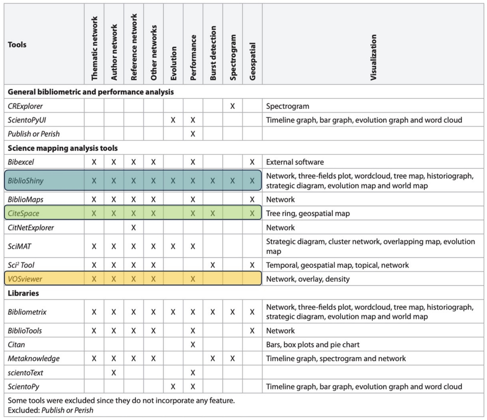
4 · Configuração Inicial
Acesso, requisitos e formatos
- Acesso / login — roda no Hugging Face Spaces: cada um duplica a instância para a sua conta (gratuita) e abre pelo navegador, sem instalar nada.
- Requisitos técnicos — só o navegador atualizado; o Space já traz R +
bibliometrixpré-instalados (também roda em R/RStudio local). - Formatos aceitos — exportações de Scopus, WoS, OpenAlex, Lens, Dimensions, PubMed, Cochrane (
.bib,.txt,.csv) ou import direto por API. - Configurações — idioma da interface, filtros do corpus e escolha de hardware (deixe CPU basic (free)).
Instalação (uma vez por sessão)
Subindo a interface
No R local o biblioshiny() abre numa aba do navegador. No Hugging Face nem isso: a sua cópia do Space já é a interface — basta abrir a URL.
Pegadinha do Space gratuito: ele “dorme” após 48h sem uso (acorda sozinho no próximo acesso) e o armazenamento é temporário — exporte seus resultados antes de fechar.
5 · Fluxo de Uso
Input → Processo → Review → Output
| Etapa | No Biblioshiny | No bibliometrix (código) |
|---|---|---|
| 1 · Input | Data → Import or Load ou API (OpenAlex/PubMed) | convert2df() |
| 2 · Processo | Appraisal: completar/filtrar; Analysis: rodar | biblioAnalysis() + summary() |
| 3 · Review | Conferir tabelas, completude e filtros | inspeção do data.frame |
| 4 · Output | Exportar tabelas, gráficos e relatórios | plot(), report |
A seguir, o fluxo real na interface: buscar → limpar → analisar.
Etapa 1 · Duas portas de entrada
a) Importar arquivo (lib padrão) Data → Import or Load — exportações de Scopus, WoS, Lens, Dimensions, PubMed, Cochrane.
Data → Import or Load → Use a sample collection → escolhe o dataset e clica Start.
b) Coletar por API Data → API → OpenAlex / Pubmed — baixa direto, sem exportar arquivo.
Mesma classe de saída (bibliometrixDB); o restante do fluxo é idêntico.
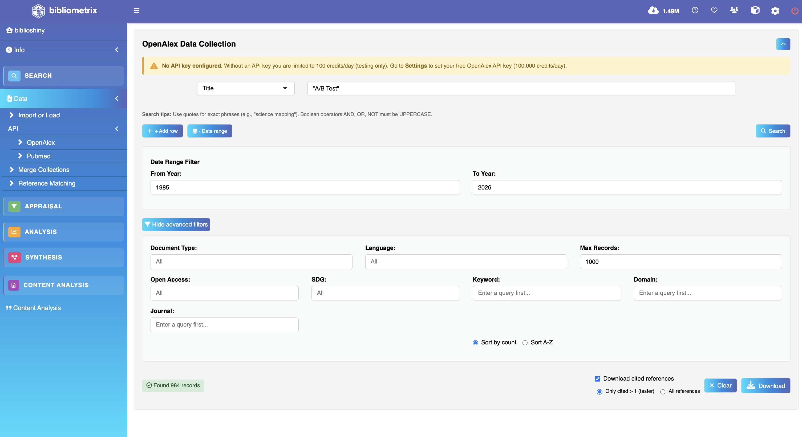
Uma função (convert2df) padroniza sete bases diferentes num único data frame.
Import ao vivo — lib padrão ao vivo
Data → Import or Load → Use a sample collection → escolhe o dataset e clica Start.
Etapa 2 · Limpar: completude dos metadados
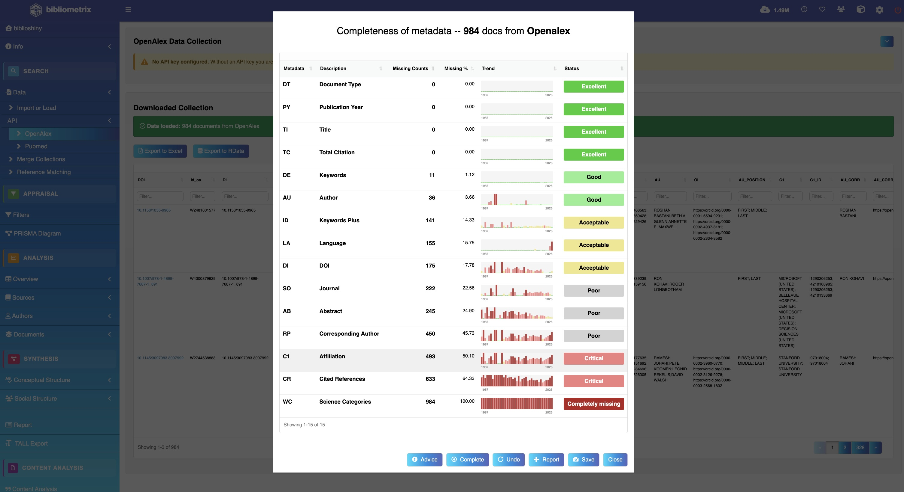
Por que limpar importa
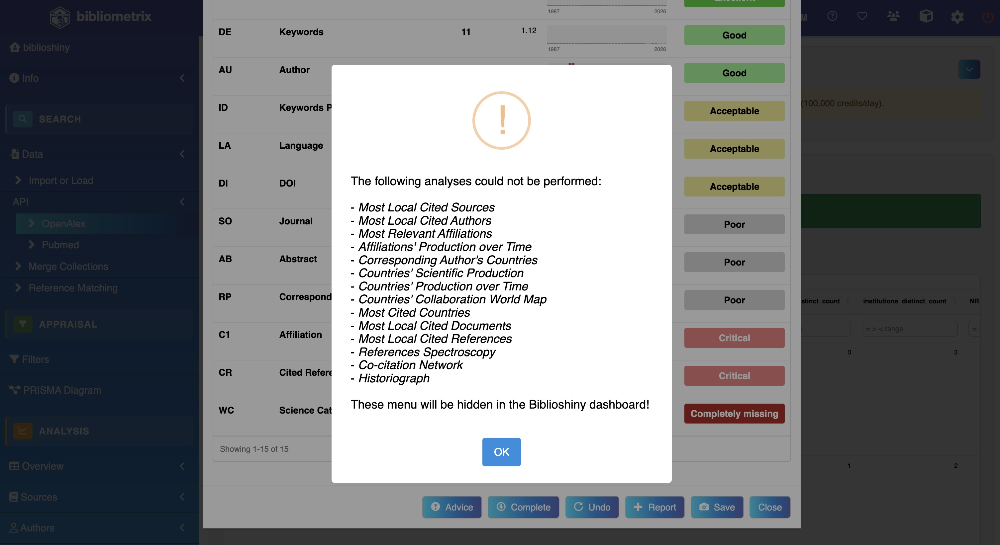
Etapa 2 · Completar via DOI (Crossref)
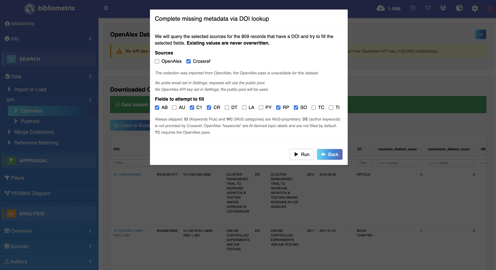
Etapa 2 · Enriquecimento — antes/depois
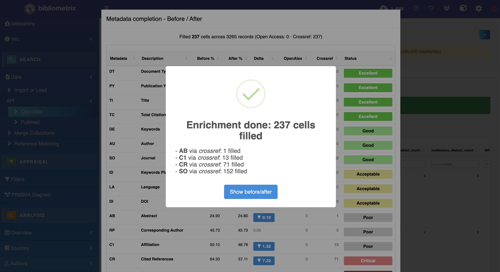
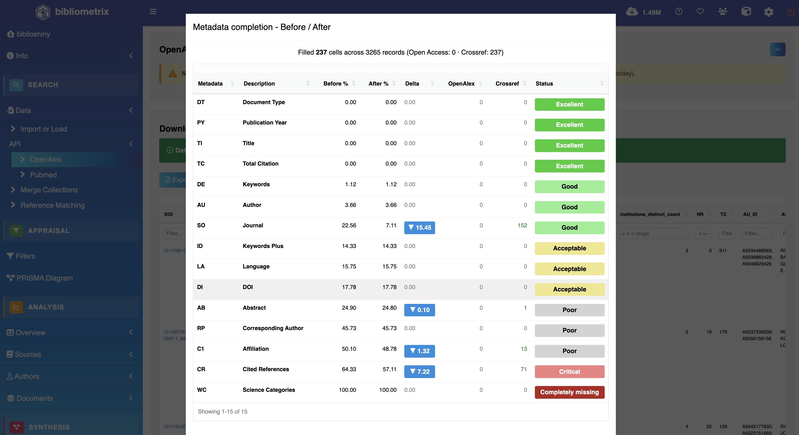
Corpus limpo e enriquecido → pronto para a análise.
6 · Exemplos Reais
Estudo de caso
Objetivo: mapear a estrutura de um campo a partir dos metadados.
Base utilizada: corpus real “A/B Testing” — 984 documentos coletados do OpenAlex (mostrado na interface); no código, usamos o corpus de exemplo management (bibliometrixData).
Resultado: indicadores descritivos, leis bibliométricas, índices de impacto e mapas de estrutura — sempre com a mesma função por trás de cada tela.
Visão geral — Main Information
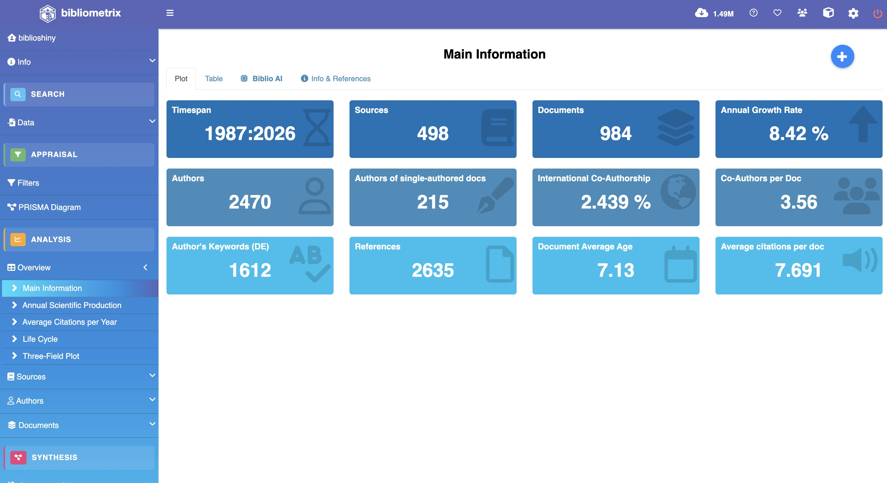
Visão geral — no código
A tela Main Information é exatamente a saída de biblioAnalysis() + summary().
Tour pela Overview ao vivo
Um clique em cada item do menu já devolve o gráfico — Average Citations → Life Cycle → Three-Field.
Evolução temporal
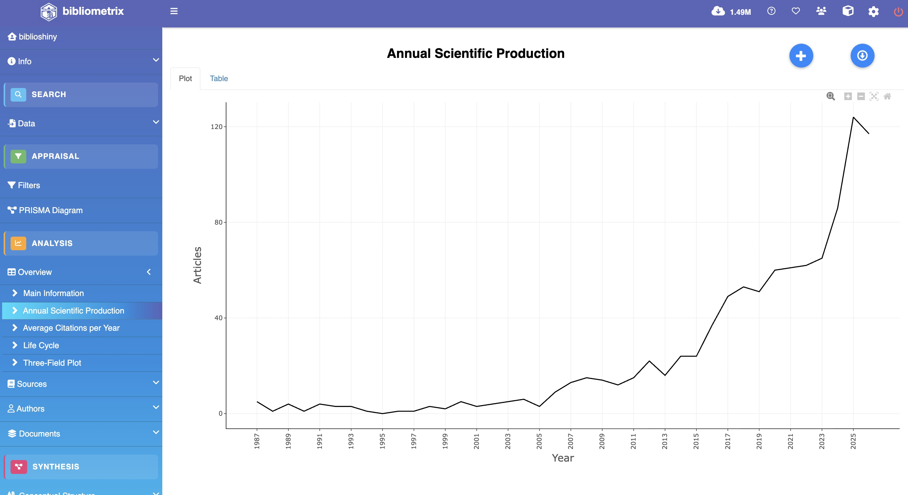
Ciclo de vida do campo
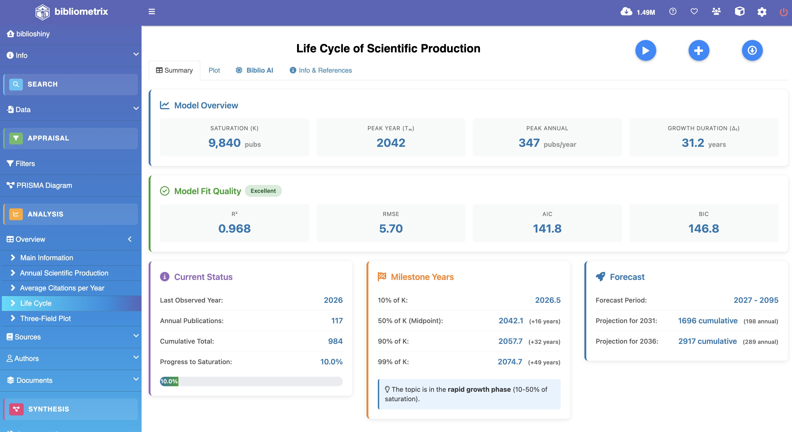
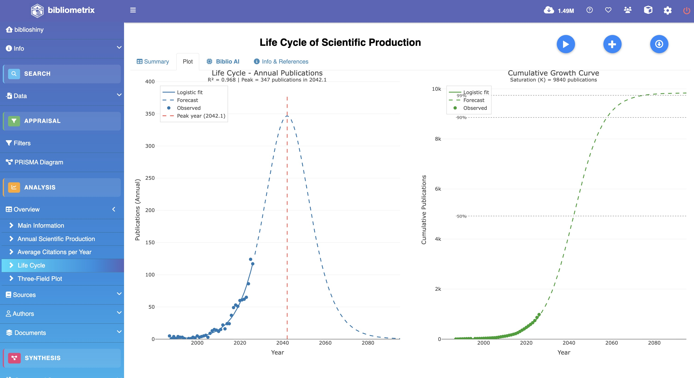
O Life Cycle mostra se o campo está em ascensão, maturidade ou declínio.
Periódicos — Most Relevant Sources
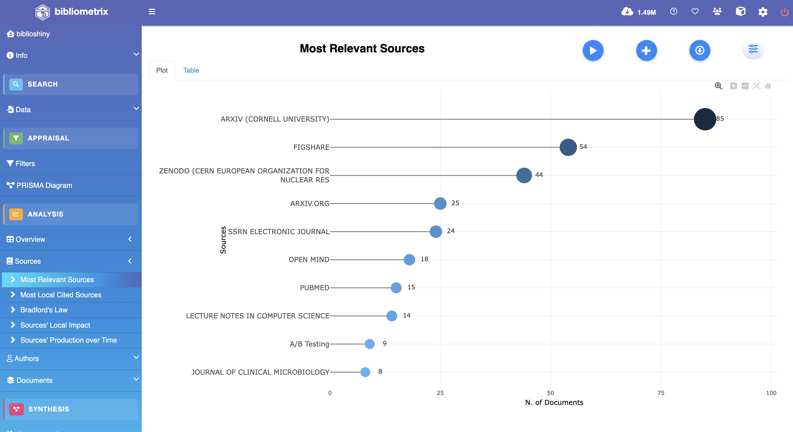
Fontes ao vivo ao vivo
Most Relevant Sources → Bradford’s Law → Sources’ Production over Time — tudo no menu Sources.
Autores e a Lei de Lotka
Lotka: poucos autores publicam muito; muitos publicam pouco. Na interface: Authors → Lotka’s Law.
Autores mais relevantes
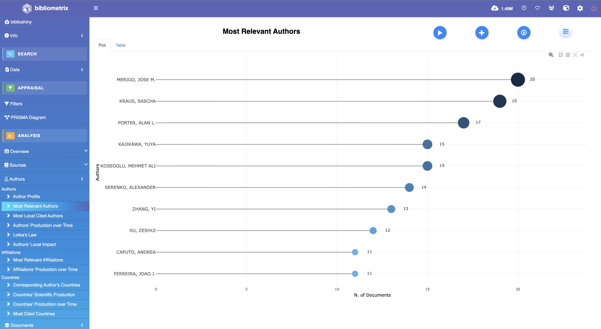
Impacto: índices h, g e m
- h: equilíbrio entre volume e impacto
- g: dá peso aos muito citados
- m: corrige o h pelo tempo de carreira
Documentos mais citados
As referências mais citadas costumam ser os clássicos que sustentam o campo. Na interface: Documents → Most Cited.
Three-Field Plot
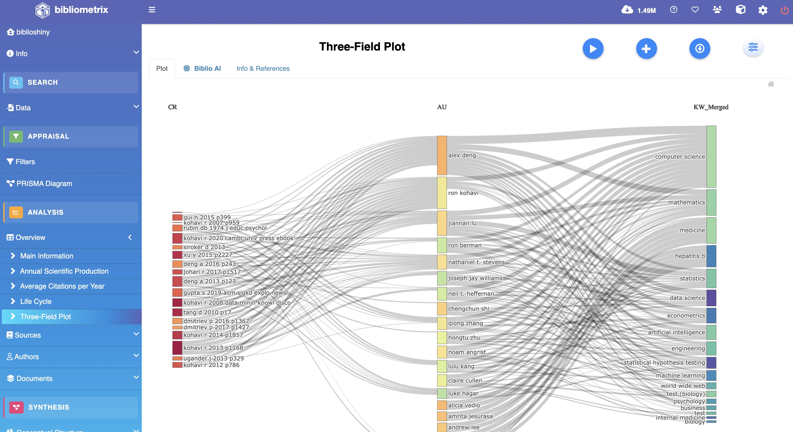
Estrutura social — produção por país
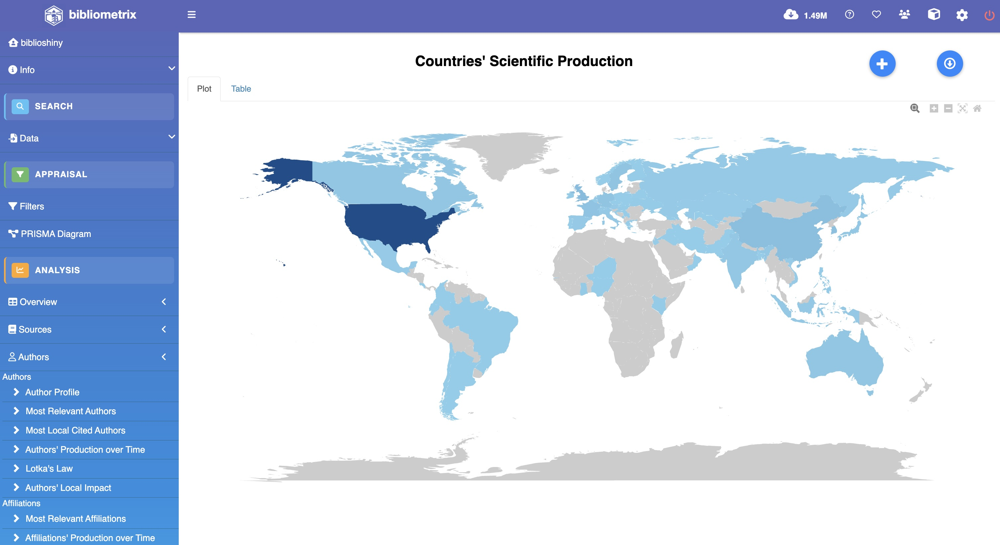
Estrutura intelectual — Co-citation
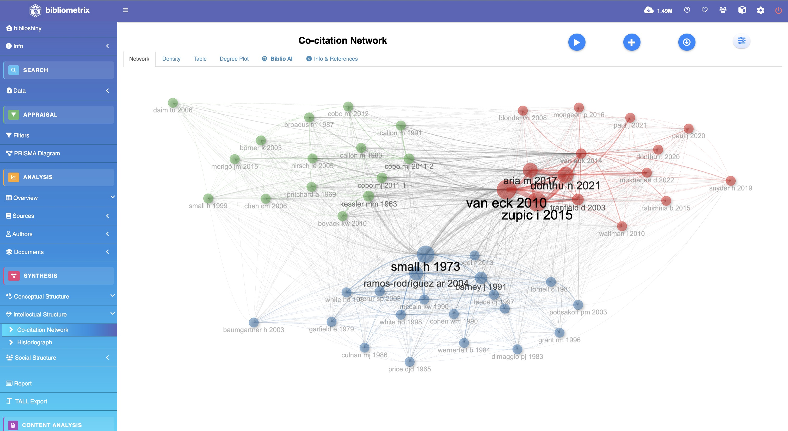
Estruturas ao vivo ao vivo
Social Structure (colaboração, mapa de países) → Intellectual (co-citação) → Conceptual (mapa temático).
7 · Formações
Onde aprender mais
Cursos livres
- Tutoriais oficiais em bibliometrix.org e canal K-Synth (YouTube).
- Vídeos e workshops de bibliometria em plataformas abertas (YouTube, Coursera).
Cursos formais
- Disciplinas de métodos de pesquisa / cienciometria em programas de pós-graduação.
- Workshops dos autores e da comunidade
bibliometrix.
Material de referência
- Livro (2026): Science Mapping Analysis — A Primer with Biblioshiny (McGraw-Hill).
- Cheat sheet da disciplina como mapa de bolso.
8 · Limitações e Riscos
Gargalos técnicos e riscos metodológicos
Gargalos técnicos
- Qualidade e cobertura das bases (cada uma indexa um recorte diferente).
- Duplicatas e campos faltantes ao mesclar exportações.
- Desambiguação de autores/afiliações ainda exige conferência manual.
Riscos metodológicos
- Vieses de algoritmo e de seleção do corpus; falsos positivos em redes.
- Biblio AI pode alucinar — a interpretação final é sempre humana.
- Indicadores fora de contexto enganam → necessidade crítica de validação por especialista.
9 · Boas Práticas
Limpe o corpus antes de analisar
Nenhum indicador é confiável se o corpus estiver sujo. Antes de qualquer análise, duas correções valem mais que qualquer técnica sofisticada — e o Biblioshiny faz as duas:
- 🧹 Remover duplicados — para não inflar as contagens.
- 🧩 Completar metadados — para não bloquear análises.
Remover duplicados
- Problema: o mesmo artigo aparece mais de uma vez (busca repetida, junção de bases) → infla nº de documentos, autores e citações e distorce as redes.
- Na interface: o Biblioshiny remove duplicados na importação / em Filters, por DOI ou por título.
- No código:
- Boa prática: deduplique logo após importar, antes de calcular qualquer indicador.
Completar metadados
- Problema: campos vazios (afiliação, país, referências citadas) bloqueiam análises inteiras — os menus correspondentes somem do painel.
- Na interface: Complete missing metadata via DOI lookup consulta Crossref/OpenAlex e preenche os vazios — valores existentes nunca são sobrescritos.
- Verifique: a tela de completude mostra, campo a campo, o % de ausentes (de Excellent a Completely missing).
- Boa prática: complete e reveja a completude antes de tirar conclusões.
10 · Atividade com Solução
Sua vez — enunciado
- Objetivo: sair sabendo ler um mapa científico — e reproduzi-lo.
- Contexto: um campo de pesquisa representado por seus metadados.
- Base utilizada: sample collection Management embutida no Biblioshiny — WoS, 1985–2020 (ou importe o seu export do Scopus/WoS/Lens).
Procedimentos esperados
- Crie uma conta (gratuita) no Hugging Face.
- Clique no botão Duplicate this Space (abaixo / link no chat) → deixe o hardware em CPU basic (free) → Duplicate Space. A primeira build leva alguns minutos.
- Abra a sua cópia → em Import or Load escolha “Use a sample collection” → dataset Management → Start (ou suba o seu export).
- Confira um indicador na interface (ex.: nº de documentos, top autores) em Overview → Main Information.

Sua vez — solução comentada
Produto esperado: o dataset Management carregado na sua cópia do Biblioshiny e um indicador lido na interface.
Critérios de verificação: o número da tela (ex.: nº de documentos, top autores) corresponde ao corpus carregado.
Solução comentada:
- Import or Load → “Use a sample collection” → Management → Start → carrega o corpus de exemplo (Etapa 1 · Input) — o
convert2df()roda por baixo dos panos. - Overview → Main Information → indicadores descritivos (Etapa 2 · Processo / Etapa 3 · Review).
- Confira que o nº de documentos e o intervalo de anos batem com o corpus carregado.
- Use o cheat sheet como mapa de bolso para localizar cada análise.
11 · Referências
Referências
Aria, M. & Cuccurullo, C. (2017). bibliometrix: An R-tool for comprehensive science mapping analysis. Journal of Informetrics, 11(4), 959–975.
Aria, M. & Cuccurullo, C. (2026). Science Mapping Analysis: A Primer with Biblioshiny. McGraw-Hill.
Grant, M. J. & Booth, A. (2009). A typology of reviews (SALSA framework). Health Information & Libraries Journal, 26(2), 91–108.
UFPR. Normas para Trabalhos Acadêmicos: PPGCD. Curitiba, 2024.
Site: bibliometrix.org · Interface: biblioshiny()
Obrigado!
Perguntas?
Guia Técnico de Uso — Biblioshiny · PPGCD/UFPR · Mestrado Profissional em Ciência de Dados
Guia Técnico · bibliometrix · Biblioshiny — PPGCD/UFPR · ↩︎ Início